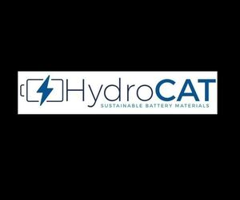

Trade Mark Journal No.2025/021 23 May 2025
WO0000001841634 (1,9)
Office of origin: United States of America

The mark consists of a stylized battery outlined in blue containing a blue shaded lightning bolt logo to the left of the stylized blue word "HYDROCAT", which is above the blue words "SUSTAINABLE BATTERY MATERIALS". The color(s) black and white represent background, outlining, shading, and/or transparent area and is/are not part of the mark.
Registration of this designation shall give no rights to the exclusive use of the words "SUSTAINABLE BATTERY MATERIALS".
The mark contains the colour blue.
The mark consists of a stylized battery outlined in blue containing a blue shaded lightning bolt logo to the left of the stylized blue word "HYDROCAT", which is above the blue words "SUSTAINABLE BATTERY MATERIALS". The color(s) black and white represent background, outlining, shading, and/or transparent area and is/are not part of the mark.
- Class 1
- Engineered battery materials or components, namely, anode active material precursors to anode active materials used to make anodes; cathode active material precursors to cathode active materials used to make cathodes, with specific performance characteristics for thermal stability, life cycle, power or range, made from recycled battery metals and marketed to manufacturers of lithium-ion batteries for use in electric vehicles, trucks, marine vessels or stationary energy storage systems; chemicals for use in the manufacture of batteries; industrial chemicals.
- Class 9
- Engineered battery materials or components, with specific performance characteristics for thermal stability, life cycle, power or range, made from recycled battery metals and marketed to manufacturers of lithium-ion batteries for use in electric vehicles, trucks, marine vessels or stationary energy storage systems.
Ascend Elements, Inc.
Representative: Richard Sampson Davis, Malm & D'Agostine, P.C., One Boston Place, Suite 3700, Att: 14687001K, Boston MA 02108, UNITED STATES OF AMERICA